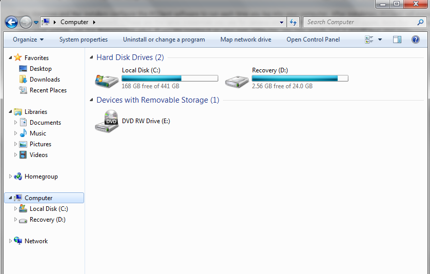
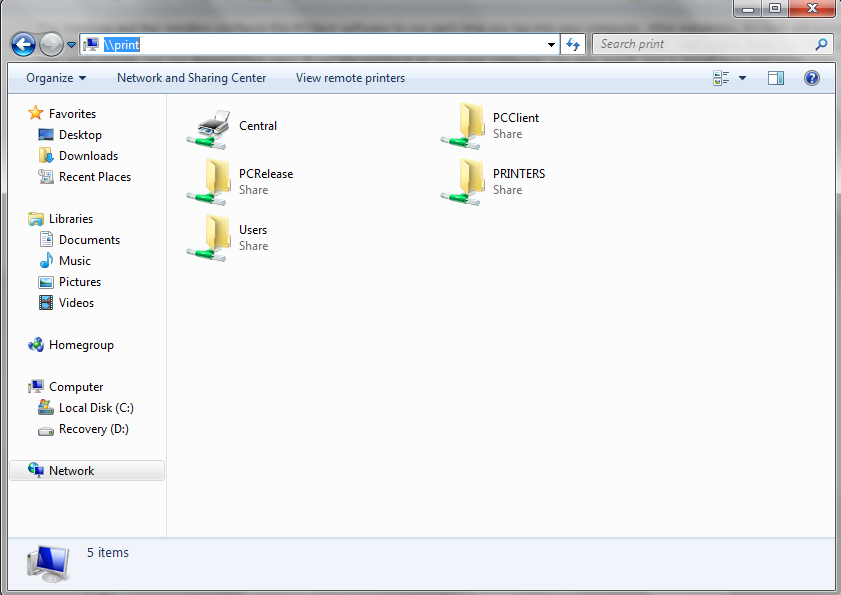
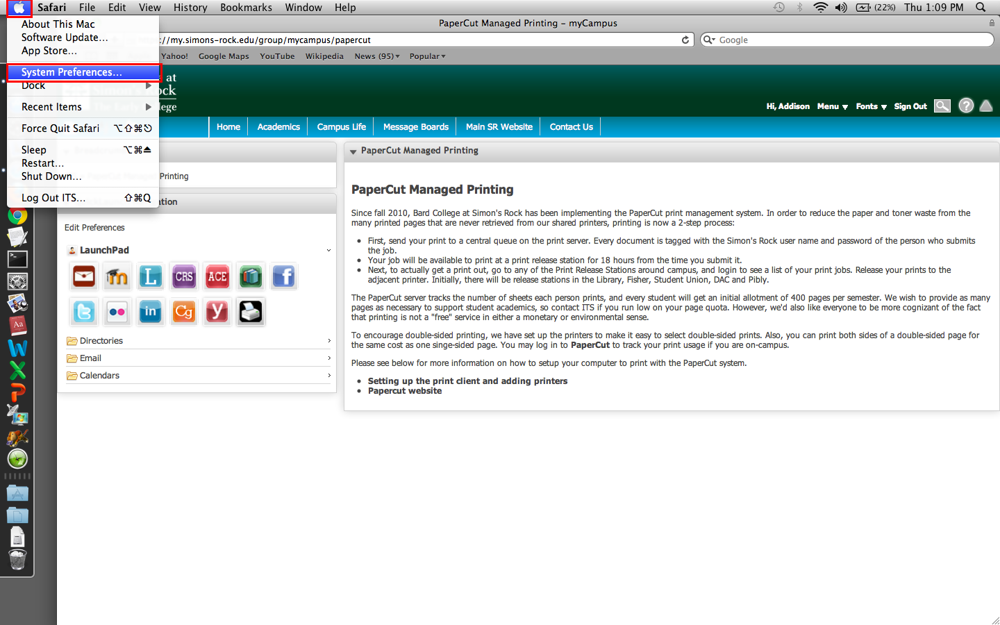
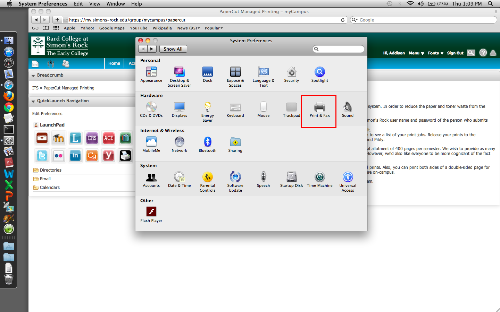
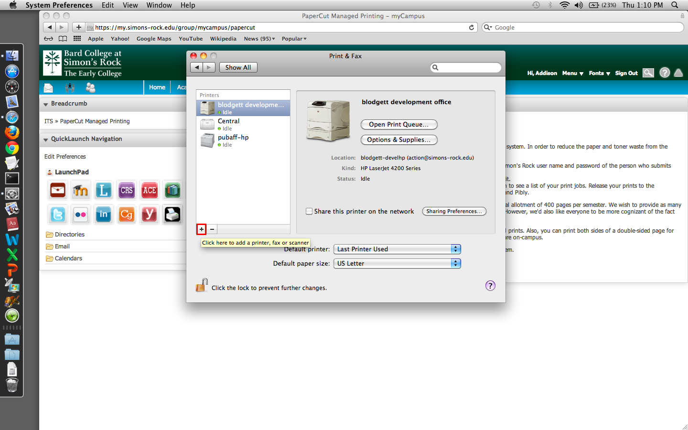
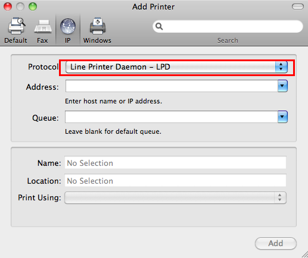
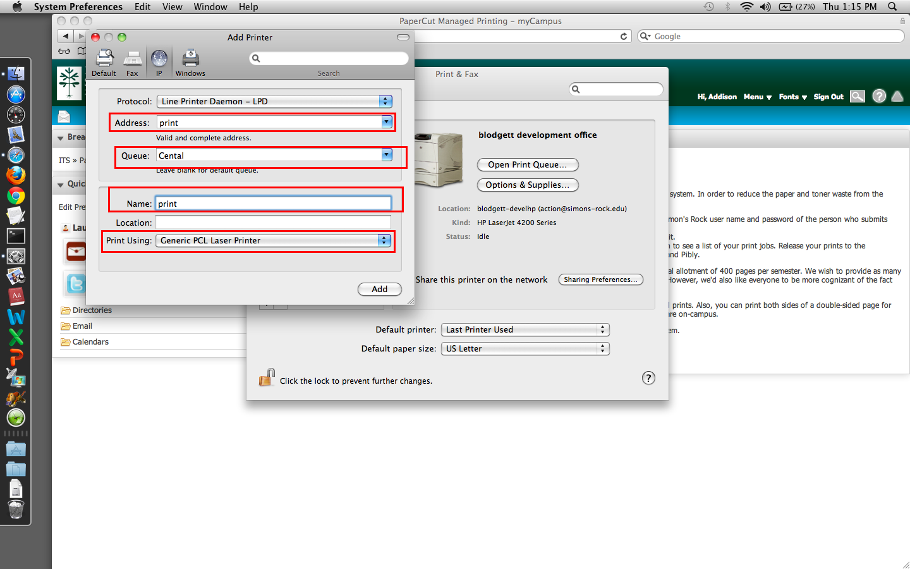
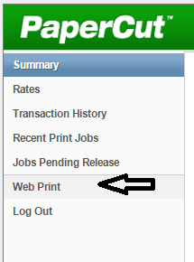
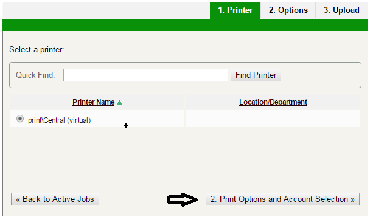
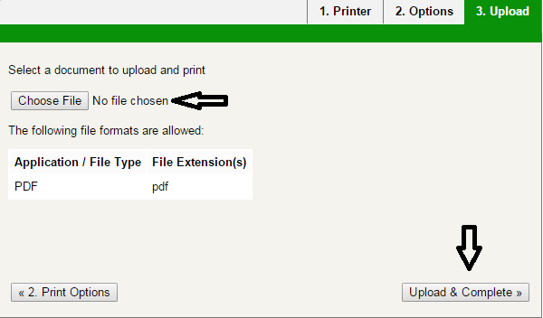

Quick Overview:
We use the PaperCut managed system printing for students on campus. This allows quick and easy printing from any of the many release stations. The general process for connecting to PaperCut printing system on any computer is as follows:
Install and run the PaperCut Client software (see download links below), and enter your Simon’s Rock login credentials. Connect to the central printer (also called the queue); it’s conveniently named “Central” and it resides on the server “print” Make the central printer your default.
Details are provided below for Windows, Mac, and Linux setups.
PaperCut Client Setup:
The PCClient software identifies your print jobs to the PaperCut system. To print to a campus printer, PCClient must be running so you can login to PaperCut when you submit a print job.
PCClient for Windows & Mac
Use the links below to download the PCClient installer for your system. (Note: you must be on-campus for these links to work)
PCClient for Linux
In order for the Linux PCClient to work, you must first have a recent Java version installed on your computer (at least version 5). For many Linux distros, you can check this from the command line with java -version to verify that Java is installed. If not, research the appropriate packages for your system. [If you're running a debian-based distro, for example, install with sudo apt-get install java-common.
After you have confirmed that Java is installed, download the PCClient package. Extract it with the following command: tar -xf pcclient-linux.tar.gz After extracting the file, find and run the pc-client-linux.sh script to launch the PaperCut client. [Note: You’ll have to run this script each time you wish to use PaperCut; you may wish to configure your machine to auto-start it whenever you login to your X graphical desktop environment].
Automatic Login
The Windows and Mac installers configure the PCClient software to run each time you log into your computer. After installation, PCClient will prompt you to login with your Simon's Rock user ID and password. (These are the same credentials you use for campus email and the Inside web pages. Note that your user ID is just the first part of your email address, not the @simons-rock.edu). If you are running it on your own computer, you may specify that it should save your credentials Always so that you do not need to re-enter your data each time you print.
At shared library and lab computers, PaperCut will only allow you to save your login credentials for a couple of minutes.
Central Printer Installation
With PaperCut, you print to a central virtual printer which will allow you to output your print job from any Print Release station on campus.
Windows Printer Install
Windows 7, 8, and 10
- Open the Start Menu (or screen) and select or search
File Explorerto open a file browser window.

- In the address bar at the top of the window, type
\\printand press enter.

- Your computer should open up a dialog that will show the computer connecting to the central printer.
Windows Vista
- Download either this 32bit driver to your system or this 64bit driver.
- Once downloaded, run the program and extract the contents to
C:\HP LJ4200 PCL6 Driver - Open the Start Menu and select
Control Panel. - In the control panel, select
Printers.- Near the top of the window, click
Add a printer - Select
Add a local printer. - Click
Create a new portand chooseType of port: Local Port - Click Next, and enter
\\printClick Next, and then clickHave Disk - Click Browse and navigate to
C:\HP LJ4200 PCL6 DriverSelecthpc4200cand click 'Open', and then press 'OK'. - Select
HP Laserjet 4200 PCL 6
- Near the top of the window, click
- Click Next
- Set the printer as your default and click Next
Mac Printer Install
-
Open Apple Menu > System Preferences > Print & Scan.


- Click the plus icon (+) to add a new printer. 
-
At the top of the
Addprinter window, chooseIP, and select Protocol:Line Printer Daemon - LPD -
Enter
printforAddress:
Enter - You may name the printer whatever you'd like.
-
For the
Use:driver menu, selectGeneric PCL Printer. 
Central for Queue
Linux Printer Install
To set up the Central printer for many common Linux distros, open up your web browser and navigate to 127.0.0.1:631. This should bring you to the CUPS (Common Unix Printing System) interface. Click Add Printer

A dialog box similar to the following should appear, providing you with a list of all printers recognized as being on the network. Select the Network "LPD/LPD Host or Printer" option and click continue.

In the next dialog box that appears, enter `lpd://print/central`.

The next step is to name your printer. You may use whatevere nomenclature you please.

Now, click the button to upload a PPD file, and choose this PPD file. Click continue

Web Print: Printing from Tablets and Smart Phones
‘Web Print’ in an online interface for printing from tablets, smartphones, and Chromebooks. Please note, however, that printing in manner is limited to PDF files only.
- In your browser, go to https://print.simons-rock.edu:9192/app and login with your student credentials.
- Click the
Web Printicon on the left-hand side. This will take you to the interface allowing you to submit a print job.

- Click
Submit a JobWe have only the one Central printer, which should already be selected. - Click
Print Options and Account Selection.

- Choose the number of copies and click
Upload Document. - Click
Choose Fileand locate the PDF file you wish to print.

- After your print job has been submitted to central, you can print it from any Print Release Station on campus.


Double-sided Printing
Please help us to conserve paper with double-sided printing!
Most programs provide an option for enabling double-sided printing from the print set-up interfaces (e.g., File > Print). Look for a Preferences dialog box, and select Two-Sided (Duplex) Printing as appropriate.
PaperCut will prompt you to select double-sided printing for large documents to help save paper; you can over-ride this before your print job before it is sent to the server if necessary.
Windows
For Windows machines, you can enable double-sided printing from the print set-up interface (File > Print in most programs).
Preferences.

Two-Sided (Duplex) Printing for double-sided printing or General Everyday Printing for single-sided printing.
Mac
Mac print interface is accessed within a document via File > Print for most programs. For double-sided printing, look to the right of the "Copies" field, check off Two-Sided and click print.
Troubleshooting
After you submit a job to the central server, PaperCut will issue a pop-up notification to remind you that the job is waiting in the queue for you to release it. If you do not see this prompt, you will need to resolve the problem and try to print again before you go to a release station to output your job.
You may also log in to the PaperCut server your printing history and also check which jobs you have queued for printing. Use the link above, or the Details link on the PCClient software window.
Confirm that the PCClient software is running before you print. On Windows, there should be a PCClient icon in the tray near the clock. On Macs, check that it is running in the Dock. Manually restart the PCClient program if it is not running.
If PCClient is running but does not pop up a login when you first print, confirm that you installed the printer using the exact addresses shown above. If you enter the wrong address for the print queue, PaperCut will not respond to your print requests.